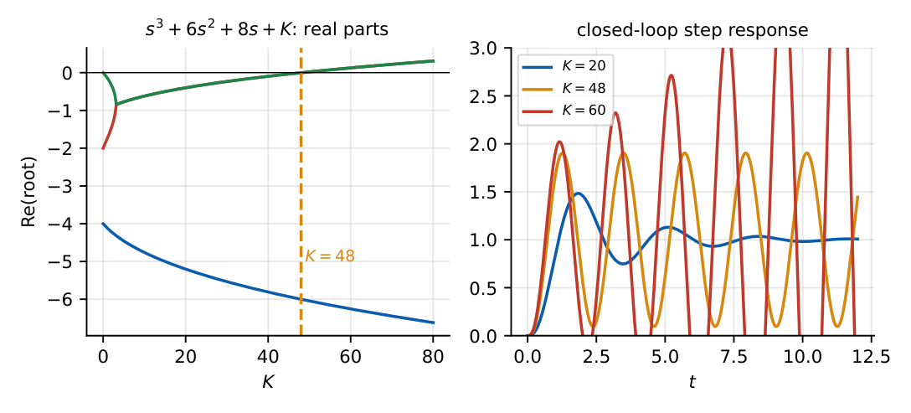

Routh–Hurwitz Stability Criterion
In this chapter
Build the Routh array; count right-half-plane roots; range of \(K\) for stability; \(K\) and frequency at marginal stability; the two special cases. One of the most reliable 2-mark sources.
12.1 Core concept
For \(a_ns^n+a_{n-1}s^{n-1}+\cdots+a_0=0\) (\(a_n>0\)) the Routh array tells the number of roots in the RHP without solving the polynomial.
12.2 Construction of the array
1.3
| \(s^n\) | \(a_n\) | \(a_{n-2}\) | \(a_{n-4}\) | \(\cdots\) |
| \(s^{n-1}\) | \(a_{n-1}\) | \(a_{n-3}\) | \(a_{n-5}\) | \(\cdots\) |
| \(s^{n-2}\) | \(b_1=\dfrac{a_{n-1}a_{n-2}-a_na_{n-3}}{a_{n-1}}\) | \(b_2=\dfrac{a_{n-1}a_{n-4}-a_na_{n-5}}{a_{n-1}}\) | \(\cdots\) | |
| \(s^{n-3}\) | \(c_1=\dfrac{b_1a_{n-3}-a_{n-1}b_2}{b_1}\) | \(c_2\) | \(\cdots\) | |
| \(\vdots\) | continue down to \(s^0\) | |||
Each new entry is the negative determinant of the two rows above (first column and the next column) divided by the first-column entry of the row just above.
The number of roots in the RHP equals the number of sign changes in the first column. Stable \(\iff\) no sign changes (all first-column entries have the same sign, and none is zero).
\(s^4+2s^3+3s^2+4s+5\):
| \(s^4\) | 1 | 3 | 5 |
| \(s^3\) | 2 | 4 | 0 |
| \(s^2\) | \(\frac{2\cdot3-1\cdot4}2=1\) | \(\frac{2\cdot5-0}2=5\) | |
| \(s^1\) | \(\frac{1\cdot4-2\cdot5}1=-6\) | ||
| \(s^0\) | 5 |
First column: \(1,2,1,-6,5\): two sign changes \(\Rightarrow\) 2 RHP roots; unstable.
12.3 Parameter-dependent stability
\(1+\dfrac{K}{s(s+2)(s+4)}=0\Rightarrow s^3+6s^2+8s+K=0\).
| \(s^3\) | 1 | 8 |
| \(s^2\) | 6 | \(K\) |
| \(s^1\) | \(\frac{48-K}{6}\) | |
| \(s^0\) | \(K\) |
Stability: \(\dfrac{48-K}6>0\) and \(K>0\Rightarrow\mathbf{0<K<48}\).
At \(K=48\) the \(s^1\) row is zero; the auxiliary polynomial from the \(s^2\) row is \(6s^2+48=0\Rightarrow s=\pm j\sqrt8=\pm j2.83\): the loop oscillates at \(\omega=2.83\) rad/s (the phase-crossover frequency) and \(K_{max}=48\) is the ultimate gain.

12.4 Special case 1: zero in the first column
Replace the zero by a small \(\varepsilon>0\), continue, then let \(\varepsilon\to0\) and count sign changes. (Alternative: substitute \(s=1/z\) and apply Routh to the reciprocal polynomial.)
\(s^4+s^3+2s^2+2s+3\): rows \(s^4:1,2,3\); \(s^3:1,2\); \(s^2:\ (2-2)/1=0\to\varepsilon,\ 3\); \(s^1:\dfrac{2\varepsilon-3}{\varepsilon}\to-\infty\); \(s^0:3\). Signs \(+,+,+,-,+\): two changes, so 2 RHP roots.
12.5 Special case 2: a complete row of zeros
It signals roots symmetric about the origin (pairs \(\pm j\omega\), or \(\pm\sigma\), or quadruplets). Form the auxiliary polynomial \(A(s)\) from the row above the zero row, replace the zero row by the coefficients of \(\dfrac{dA}{ds}\), and continue. The roots of \(A(s)=0\) are roots of the original polynomial.
\(s^5+s^4+3s^3+3s^2+2s+2\): \(s^5:1,3,2\); \(s^4:1,3,2\); \(s^3:0,0\). \(A(s)=s^4+3s^2+2\), \(A'=4s^3+6s\): \(s^3:4,6\); \(s^2:1.5,2\); \(s^1:0.667\); \(s^0:2\). No sign changes below the zero row: no RHP root. Roots of \(A\): \(\pm j,\pm j\sqrt2\); the fifth root is \(-1\). The system is marginally stable.
12.6 Relative stability with Routh
To check that all roots lie to the left of \(\sigma=-\sigma_0\): put \(s=z-\sigma_0\), expand, apply Routh to \(z\). E.g. for \(s^3+6s^2+11s+6\) with \(s=z-1\): \(z^3+3z^2+2z\): the constant term is zero, confirming a root at exactly \(s=-1\).
12.7 Physical interpretation
The array is a tabulation of the Euclidean algorithm (Sturm-type test) on the even and odd parts of the polynomial: it detects how many roots sit on each side of the \(j\omega\) axis. A zero row: the polynomial has a factor with roots on the axis (or symmetric), i.e. the boundary of stability.
Third order \(s^3+a_2s^2+a_1s+a_0\): stable \(\iff a_2,a_1,a_0>0\) and \(a_2a_1>a_0\). Second order: all coefficients positive. For \(K\)-ranges, find \(K\) where the \(s^1\) row (for a cubic) or the last first-column entry vanishes; the \(s^2\) row’s auxiliary polynomial gives \(\omega\). Fourth order: check the \(s^1\) and \(s^0\) entries.
(i) When a row is multiplied by a positive constant the signs are unchanged, but never by a negative one. (ii) A row of zeros is not the end: form \(A(s)\) and differentiate. (iii) Zero-first-column entries are replaced by \(\varepsilon\), not by \(0\). (iv) Sign changes give the number of RHP roots; roots on the \(j\omega\) axis show up only through the zero row. (v) For positive feedback the characteristic equation is \(1-GH=0\).
Q1. The number of sign changes in the first column of the Routh array equals (A) LHP roots (B) RHP roots (C) \(j\omega\) roots (D) order.
Q2. A row of zeros in a Routh array indicates (A) all roots in the LHP (B) roots symmetric about the origin (C) an error (D) pure real roots.
Q3. \(s^2+4s+K\) is stable for (A) \(K>0\) (B) \(K>4\) (C) \(K<4\) (D) all \(K\).
Answers: Q1 (B). Q2 (B). Q3 (A).
Q4. \(s^3+3s^2+2s+K\): range of \(K\) (A) \(0<K<6\) (B) \(K>6\) (C) \(K<6\) (D) \(0<K<2\).
Q5. \(s^4+2s^3+3s^2+2s+1\) (all coefficients positive): number of RHP roots is (A) 0 (B) 1 (C) 2 (D) 4.
Answers: Q4 (A): \(3\cdot2>K\). Q5 (A): rows \(1,3,1\); \(2,2\); \(2,1\); \(s^1\): \((2\cdot2-2\cdot1)/2=1\); \(s^0=1\): no sign change.
Q6. \(G(s)=\dfrac{K}{s(s+1)(s+5)}\) (unity feedback). Maximum \(K\) for stability \(=\) .
Q7. For Q6 at \(K_{max}\) the sustained oscillation frequency is rad/s (two decimals).
Answers: Q6: \(s^3+6s^2+5s+K\): \(6\cdot5>K\), so \(30\). Q7: \(6s^2+30=0\Rightarrow s=\pm j\sqrt5\), \(\omega=2.24\).
Q8. \(s^3+2s^2+s+2\): (A) needs a zero-row case (B) is marginally stable (C) has roots on the \(j\omega\) axis (D) is unstable.
Answers: Q8: \(2\cdot1=2\): equal, so the \(s^1\) row is zero, \(A=2s^2+2\), roots \(\pm j\); (A), (B), (C).
\(s^4+Ks^3+s^2+s+1=0\): rows \(1,1,1\); \(K,1\); \(\dfrac{K-1}{K},1\); \(s^1\): \(\dfrac{(K-1)/K-K}{(K-1)/K}\). Stability needs \(K>1\) (from the \(s^2\) entry) and a positive \(s^1\) entry, i.e. \((K-1)/K-K>0\Rightarrow K^2-K+1<0\), which is never true (discriminant \(<0\)). So the system is unstable for every \(K\).
T1. Range of \(K\) for \(s^3+4s^2+(K+3)s+K=0\).
T2. Roots on the imaginary axis of \(s^4+s^3+3s^2+2s+2\)? (Use Routh.)
Answers: T1: \(4(K+3)>K\Rightarrow3K>-12\); with \(K>0\): all \(K>0\). T2: \(s^4:1,3,2\); \(s^3:1,2\); \(s^2:1,2\); \(s^1:0,0\); \(A=s^2+2\), roots \(\pm j\sqrt2\); the other two: \(s^2+s+1\): stable, so marginal.
- Sign changes in the first column \(=\) number of RHP roots.
- Zero in first column: \(\varepsilon\); zero row: auxiliary polynomial \(A(s)\), use \(dA/ds\).
- Cubic: \(a_2a_1>a_0\), all positive. \(K_{max}\) from \(s^1\) row \(=0\); \(\omega\) from the \(s^2\) row.
- Relative stability: \(s=z-\sigma_0\).